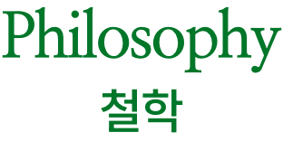

"
디자인은
좋은 가치와 기능은 물론이고
형태가 좋고, 오래 볼 수 있어야 하며
좋은 분위기를 만들어 주어야 한다.
"
우리가 디자인을 물체로부터 더 많은 것을 얻기 위한 방정식으로 생각한다면, 형태의 불필요한 참신함에 의존하는 접근 방식이 충분하지 않다는 것이 분명하다. 형태의 문제를 완전히 피하는 것은 더 진정한 해결책을 제공할 수 있다. 물체의 공식적인 모습은 문제나 도면 페이지에 대한 몇 시간 동안의 신중한 분석의 결과일 필요는 없다. 그것은 아이디어, 과정, 재료, 기능 또는 느낌의 시각적 결과일 수 있다. 그리고 다시 그것은 빌린 형태나 도난당한 물건의 형태로 도착할 수 있다. 결과에 이전에 없었던 것이 포함되어 있다면 이것에 대한 도덕적 이의는 있을 수 없다. 사실 일상적인 물건의 납치는 경제적인 방식으로 새로운 물건을 제공하고 명백하거나 일상에 큰 아름다움이 있다는 점을 지적하는 이중 목적을 제공한다. 그래서 디자이너를 형태 전달자로 묘사하는 것은 부정확하며, 그는 이것뿐만 아니라 우리 모두에게 더 나은 형태를 만드는 것에 덜 관심이 있을 수 있다.
우리 디자이너들은 모두 우리 자신의 대의를 홍보하는 것에 대해 유죄이지만, 아마도 우리는 저자의 자아에서 자유로운 익명의 물체가 종종 가지고 있으며, 우리의 더 자의식적으로 계획된 제안에서 종종 누락되는 신비한 품질과 자연스러움을 연구하고 흡수할 수 있을 것이다. 익명의 물체의 가치는 현실 세계에서 물체는 생존을 위한 장기적인 유용성에 의존하는 물체일 뿐이라는 것을 상기시키는 것이다.
나는 성공적인 물건, 즉 함께 살기 좋은 물건이 특정 특성을 공유하는 것처럼 보인다는 것을 알아차리기 시작했다. 그것들은 결코 미적 결정의 결과도 아니었고, 순전히 기능적이지도 않았다. 그들은 항상 재료의 적절성과 조합, 물체를 사용하고 사는 인간의 경험, 물체가 주변 환경에 미치는 영향과 그 목적에 대한 의사 소통에 대한 추가적인 고려와 함께 이 두 극단의 균형을 맞추었다. 나는 매력, 은밀한 효율성 덕분에 눈에 잘 띄는 물체가 시간이 지남에 따라 일상적인 선택의 대상이 될 수 있다는 것을 깨달았다. 장기적으로 그들은 같은 계급의 다른 사람들보다 그 일에 더 많은 성격을 가지고 있었다. 이러한 물건의 대부분은 마케팅 의미에서 ‘설계’되지 않았는데, 아마도 실용성과 진정으로 좋은 의미의 문제 해결을 금지하는 것으로 보이는 마케팅의 독창성과 동일성에 대한 동시 요구 때문일 것이다. 마케팅이 종종 불필요한 변화의 원동력이며, 만족스러운 제품을 덜 효율적이지만 판매하기 쉬운 제품으로 대체한다는 것은 슬픈 사실이다. 나는 지난 수십 년, 심지어 지난 세기 동안의 일상적인 물건과 오늘날 이용 가능한 물건들을 비교하면 전반적인 품질이 개선될지 의심스럽다. 기술과 새로운 재료는 성능과 디자인을 향상시킬 수 있다; 그들은 최신 정보를 가져오고 때때로 혁신할 수 있지만, 물건과 함께 사는 경험은 저렴해진 것 같다. 게다가, 사회가 더 ‘발전’될수록 쓸모없는 물건에 더 많은 가치가 부여되고 유용한 것에 대한 감사가 줄어드는 것으로 보인다. 우리는 이 감사를 유지해야 한다. 그렇지 않으면 현실과의 접촉을 잃을 수도 있다.
The Unimportance of Form
1991
Published in Ottagono No. 100.
Immaculate Conception Objects without Author
1996
Published in Ottagono No. 118.
Utilism vs. Uselessnism
2002
From Everything But The Walls,
published by Lars Müller Publishers.